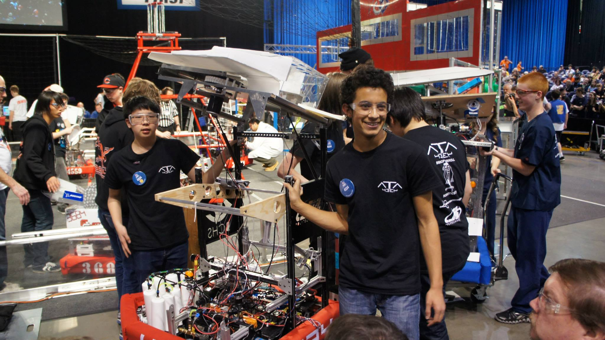

ATA started with one student - Alex Rodrigues. From a great background in FTC and FRC, winning world championships in FTC and winning a spot to world championships in FRC, he chose during his grade 11 year to start a team at Bishop Carroll. In a short 6 months, he organized, trained and got the resources that were required in order to compete in 2012. Although it would be a great accomplishment for such a team to finish a robot on time, the team’s goals were higher. From making a practise robot, to analysing live streams for hours, to strategizing alliance possibilities, the team set themselves up to be winners. And they did win. Being highest seeded rookie team, and winning rookie all-star award in the Greater Toronto Regional, they earned their spot in the world championships in St. Louis.
In St. Louis, the humble beginnings soon began big dreams. After a struggle in qualifications surrounded by technical problems, they were able to pique the interest of hall-of-fame team 1114 and team 2056, the longest winning streak holder in FIRST. This alliance selection was later dubbed the “Eh Team”, in reference to their dominant strategy, and the three teams’ Canadian heritage. ATA’s defense, coupled with 2056’s fast shooting and 1114’s accuracy became a triple threat that won them their division in the world championships, bringing them to the Einstein field - the most prestigious field in FIRST.
Briefly after this run, ATA went on to win what is commonly known as the hardest competition, IRI, with 1114 and 2826.
The 2013 and 2014 seasons brought some success. ATA won the FIRST Western Canadian regional in both years. At the 2013 Championships, the team made it quarterfinals in Gallileo Division. In 2014, the team won the Regional Chairman's Award for Western Canada and made it to the Curie Division.
In the 2015 season, ATA, along with 624 (CRyptonite) and 1619 (Up-A-Creek Robotics) won the Utah Regional and got placed in the Archimedes Division during the 2015 Championship. The team also took home the Innovation in Control Award sponsored by Rockwell Automation at the Western Canadian Regional.